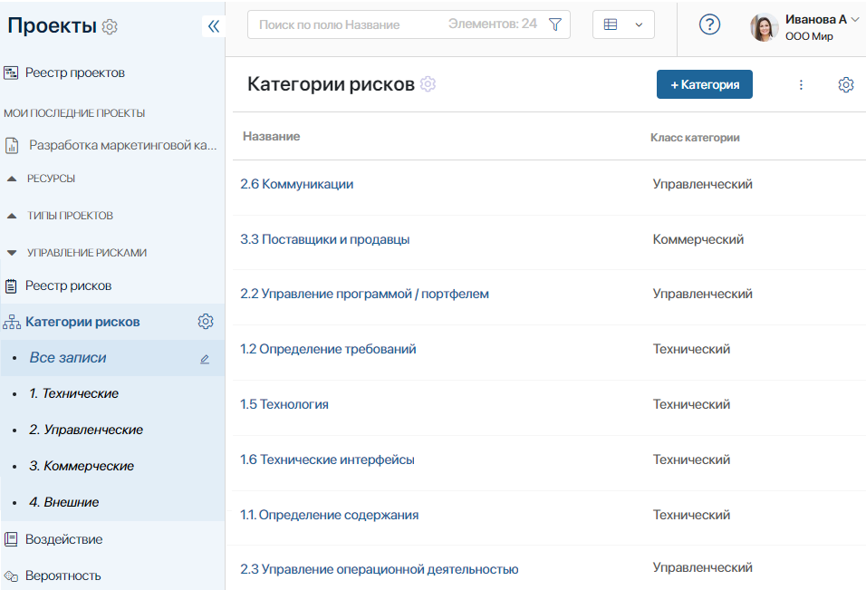
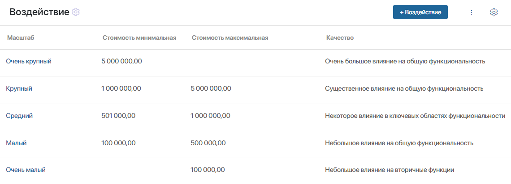
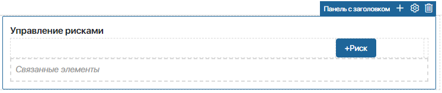
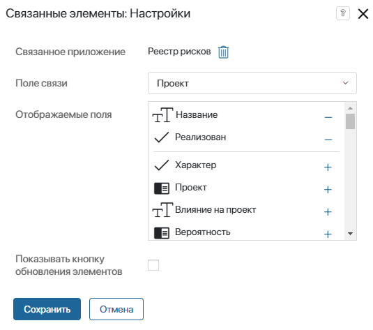
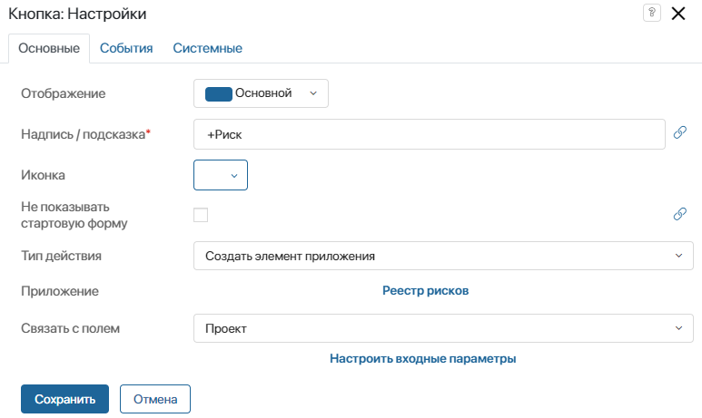
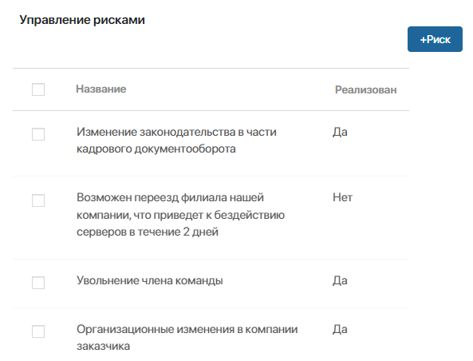
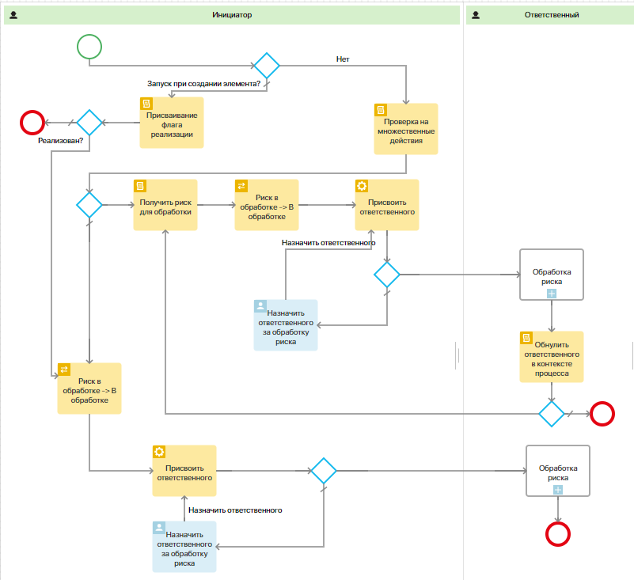
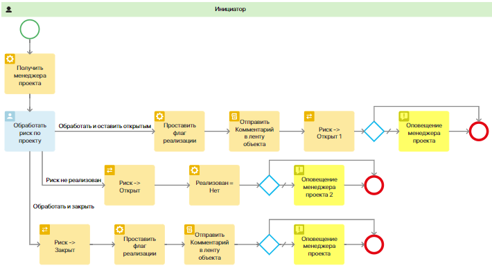
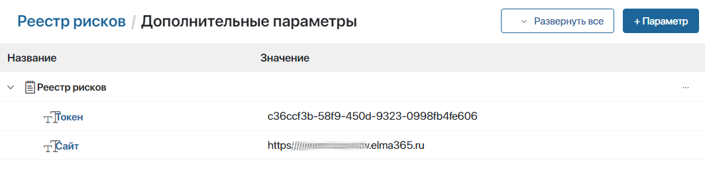

Настроить решение может администратор системы. Для этого:
- Импортируйте готовое решение из каталога ELMA365 Store. В результате импорта приложения и бизнес-процессы решения добавятся в раздел Проекты.
- Настройте справочники Категории рисков, Воздействие, Вероятность. Это позволит группировать риски для их учёта и анализа.
- Настройте права доступа к приложению Реестр рисков. По умолчанию доступ не ограничен. Например, назначьте права создавать и редактировать риски проекта только его руководителю и куратору. Для этого:
- на форму просмотра карточки риска вынесите свойства приложения Проекты: Руководитель проекта и Куратор проекта;
- в настройках доступа к данным приложения Реестр рисков выберите ограничение на уровне элементов приложения и добавьте указанные свойства приложения. Затем назначьте для них права доступа.
- Добавьте список рисков на форму карточки проекта.
- Для корректной работы процесса Сменить ответственного настройте дополнительные параметры в приложении Реестр рисков.
- Вы можете внести и другие изменения в бизнес-процессы решения, чтобы выполнять стандарты вашей компании.
Настроить справочники
Категории рисков
Сформируйте список категорий риска. Это позволит группировать риски по их тематике. В карточке риска тематику можно выбрать в поле Категория риска.
По умолчанию в справочнике созданы папки для группировки всех записей на Технические, Управленческие, Коммерческие и Внешние. Вы можете изменить набор папок.
Чтобы добавить запись, в правом верхнем углу нажмите + Категория. Созданные по умолчанию записи можно изменять.

Воздействие
В этом справочнике определите набор вариантов, доступных для выбора в карточке риска в поле Масштаб воздействия. Это позволит группировать риски по степени их влияния на проект.
Чтобы добавить запись, в правом верхнем углу нажмите + Воздействие. Вы можете указать стоимость риска и добавить описание его влияния на ход проекта. Созданные по умолчанию записи можно изменять.

Вероятность
В этом справочнике определите набор вариантов, доступных для выбора в карточке риска в поле Вероятность. Это позволит группировать и оценивать риски по вероятности их наступления. Чтобы добавить запись, в правом верхнем углу нажмите + Вероятность. Созданные по умолчанию записи можно изменять.
Настроить карточку проекта
Список рисков проекта можно отобразить в его карточке. Для этого добавьте на форму карточки виджеты Панель с заголовком, Связанные элементы и Кнопка.

Выполните настройки:
- Откройте форму просмотра приложения Проекты в дизайнере интерфейсов.
- На страницу шаблона карточки проекта перенесите виджет Панель с заголовком и в его настройках укажите заголовок Управление рисками.
- На виджет Панель с заголовком добавьте виджет Связанные элементы. В настройках виджета:
- укажите Реестр рисков в качестве связанного приложения;
- выберите поле Проект в качестве поля связи;
- выберите поля элемента приложения Реестр рисков, которые хотите отобразить на карточке проекта.

- На виджет Панель с заголовком добавьте виджет Кнопка и настройте её:
- выберите тип действия Создать элемент приложения и приложение Реестр рисков. Тогда с помощью кнопки можно добавить новую запись в список рисков;
- в опции Связать с полем укажите приложение Проекты и в настройках входных параметров выберите Элемент приложения. Тогда в карточке нового риска автоматически будет указан текущий проект.

- Сохраните и опубликуйте изменения. После этого в карточке проекта отобразится виджет со списком его рисков, который можно дополнять.

Настроить процессы
По умолчанию на уровне приложения Реестр рисков настроены четыре бизнес-процесса, которые можно изменять:
- Добавление рисков по шаблону — позволяет скопировать перечень рисков шаблонного проекта в новый проект, созданный по шаблону.
- Отправка на обработку — включает обработку массива рисков, постановку задачи о назначении ответственного и запуск подпроцесса Обработка риска. Процесс привязан к кнопке Обработать риск в карточке риска, а также к кнопке Сохранить на форме создания риска.

- Обработка риска — подпроцесс, запускаемый из процесса Реализация риска. Включает задачу по обработке риска и механизм оповещения о результатах выполнения задачи.

- Смена ответственного — позволяет изменить данные пользователя, назначенного ответственным за работу с риском. Процесс привязан к кнопке Сменить ответственного в карточке риска.
Для корректной работы этого процесса настройте дополнительные параметры в приложении Реестр рисков:
- Добавьте токен в разделе Администрирование > Токены.
- Перейдите в раздел Проекты. Справа от названия приложения Реестр рисков нажмите значок шестерёнки и выберите Дополнительные параметры.
- Добавьте созданный токен и URL-адрес вашей компании в ELMA365. Эти данные используются в скрипте процесса, чтобы прервать запущенные ранее экземпляры других процессов по риску.
